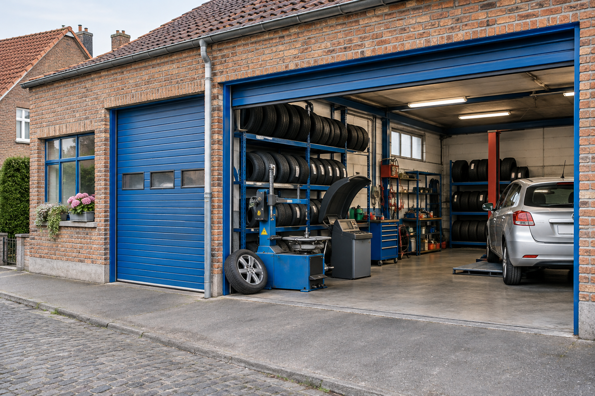

Een eerlijk vertrekpunt
We brengen de beginsituatie in kaart en kiezen wat we willen verbeteren.
Meer zichtbaarheid is pas waardevol als je weet wat ze bijdraagt. Daarom kijken we naar duidelijke doelen, vergelijkbare periodes en concrete veranderingen.
We brengen de beginsituatie in kaart en kiezen wat we willen verbeteren.
We vergelijken gelijke periodes en houden rekening met seizoen en campagnebudget.
We tonen de bron, de veranderingen en wat de cijfers wel en niet vertellen.
ONTDEK ONZE AANPAK · FICTIEVE VOORBEELDEN
Kies een dienst en bekijk wat wij kunnen verbeteren. Alle bedrijven, berichten en cijfers in deze voorbeelden zijn verzonnen. De kaart van Gent is echt; het demo-bedrijf staat er niet op.
Interactieve demonstraties · geen gerealiseerde of gegarandeerde Upwise-resultaten.
GOOGLE BEDRIJFSPROFIEL · FICTIEVE DEMO
Zo kunnen wij een onvolledig bedrijfsprofiel omzetten in een duidelijke eerste kennismaking. Bekijk de twee versies en de voorbeeldcijfers eronder.
De kaart is afkomstig van Google Maps. Het profiel rechts is een eigen, fictieve demonstratie en staat niet als bedrijf op de kaart. Open de kaart van Gent
Wij verduidelijken je aanbod, vullen bedrijfsinformatie aan en kiezen foto's die jouw onderneming goed laten zien.

Donker · onscherp · verkeerde uitsnedeDrie AI-gegenereerde voorbeeldfoto's.
Bandenwinkel · Gent
Banden te koop. Bel maar.
Eigen interface-demonstratie, geen officieel Google-profiel. Fictieve reviews; een hogere score ontstaat niet automatisch door profieloptimalisatie.
VOORBEELDCIJFERS · GEEN KLANTRESULTATEN
Fictieve periodes van elk 31 dagen:
1–31 januari versus 1–31 maart 2026.
Elke grafiek heeft een eigen schaal. De cijfers tonen alleen hoe een vergelijking kan worden weergegeven: geen voorspelling, garantie of bewijs dat profieloptimalisatie deze groei veroorzaakt. Belklikken zijn geen bevestigde gesprekken. Bij echte cases vermelden we de gegevensbron, periode en relevante omstandigheden.
SEO & LOKALE ZOEKOPTIMALISATIE · DEMO
Wij verbeteren de inhoud, techniek en lokale relevantie van je website, met als doel hoger te verschijnen bij zoekopdrachten van potentiële klanten.
Informatie over banden en onderhoud.
Welkom op onze website. Klik hier voor meer informatie over ons bedrijf.
18De eigen pagina staat tussen algemene resultaten en is moeilijk te vinden.
Informatie over banden en onderhoud.
Wij wisselen je banden en controleren hun staat. Ontdek onze diensten in Gent en vraag je voorkeurmoment aan.
3Hoger in beeld, met een pagina die aansluit op de dienst en de regio.
Schematische Google-weergave: omliggende resultaten zijn ingekort. Positie 18 → 3 is een fictief scenario om het doel van SEO te tonen, geen gemeten of gegarandeerde stijging.
Wij verbeteren dienstpagina’s, laadsnelheid, interne links en lokale informatie. Zo werken wij aan een betere positie bij relevante zoekopdrachten. Werkelijke posities verschillen per zoekopdracht, locatie en concurrentie; Google bepaalt de volgorde.
SOCIAL MEDIA MARKETING · DEMO
Wij brengen structuur in je profiel, visuele stijl en content. Zo wordt duidelijk waarom iemand jouw onderneming zou volgen.
 Instagram＋ ♡ ☰
Instagram＋ ♡ ☰Wij schrijven een heldere bio, werken herkenbare contentthema’s uit en plannen berichten. De beelden zijn AI-gegenereerd; deze demo plaatst niets op social media.
E-MAILMARKETING & KLANTOPVOLGING · DEMO
Wij maken de boodschap persoonlijker en duidelijker, met één logische volgende stap en een passende opvolging.
Van Bandencentrale Gent
Onderwerp NIEUWSBRIEF!!! NIEUWE BANDEN!!!
Wij hebben banden in verschillende soorten. Kijk op onze website of bel voor informatie. We hebben ook andere diensten. Tot binnenkort!
Meer infoWij bevestigen de inschrijving en leggen uit wat iemand kan verwachten.
Wij delen gerichte informatie die bij de interesse van de klant past.
Wij plannen een passend vervolgmoment, zonder onnodige herhaling.
Bij 1.000 afgeleverde mails: 12 klikken vóór tegenover 36 na, of 1,2% tegenover 3,6%. Dit zijn gekozen voorbeeldwaarden, geen voorspelling of gemeten campagne. De voorbeeldknop verstuurt niets.
AI & AUTOMATISERING · SIMULATIE
Wij kunnen aanvragen verzamelen, ordenen en een passend conceptantwoord voorbereiden. Jij houdt controle over wat er wordt verstuurd.
“Hallo, ik wil volgende week mijn banden laten wisselen. Kan dat op dinsdag? Groeten, Sam.”
Bericht lezen, gegevens overtypen, agenda bekijken en een antwoord schrijven.
Klik om te zien hoe wij deze fictieve aanvraag kunnen ordenen en voorbereiden.
Deze demonstratie gebruikt vooraf geschreven tekst en geen live AI, agenda of CRM. Een echte koppeling vraagt configuratie en controle; er wordt hier niets verstuurd of ingepland.
GOOGLE ADS & SOCIAL ADVERTISING · DEMO
Wij stemmen je advertentie af op een concrete behoefte en zorgen dat de boodschap aansluit op de pagina waar bezoekers terechtkomen.
 facebook⌕ ☰
facebook⌕ ☰Wij verkopen banden! Goede service en goede prijzen. Kijk op onze website voor meer informatie over ons bedrijf!
Facebook-advertentie · fictief sjabloon en voorbeeldinteracties
Wij bekijken relevante klikken, aanvragen en kosten per aanvraag. Dezelfde uitstraling is geen garantie op betere prestaties; doelgroep, aanbod en campagne-instellingen tellen mee. Dit voorbeeld bevat geen echte advertentie of werkende advertentieknop.
BRANDING & LOGO’S · ONTWERPCONCEPT
Wij vertalen jouw verhaal naar een herkenbaar logo, verzorgde typografie en praktische huisstijlkeuzes.
Wisselende lettertypes, losse logo’s en geen vaste opmaak.
Dezelfde stijl in je website, profiel en communicatie.
Logo en huisstijl zijn originele illustratieve concepten voor een fictief bedrijf. Geen bestaand klantproject.
WEBSITES & CONVERSIEOPTIMALISATIE · DEMO
Wij geven je aanbod structuur en plaatsen de volgende stap waar bezoekers die verwachten.
WEBSITE · FICTIEF ONTWERPCONCEPT
Links een onoverzichtelijke website. Rechts een voorbeeld van hoe wij het aanbod, de uitstraling en de route naar een afspraak duidelijker kunnen maken.
BANDEN · PRIJZEN OP AANVRAAG
Wij doen banden en nog veel meer. Kijk rond op onze site voor meer informatie over onze firma en onze verschillende diensten.
Contact? Zie de pagina informatie.
Veel losse tekst, een zwakke foto en een contactmogelijkheid die je moet zoeken.
JOUW BANDENSPECIALIST IN GENT
Bandenwissel, uitlijning en controle.
Helder advies voor jouw auto.
Een herkenbaar aanbod, heldere fotografie en een afspraakactie op de juiste plek.
Beide websites zijn fictieve, niet-klikbare ontwerpvoorbeelden. Geen bestaande klantwebsites en geen bewijs van conversiegroei.
De boodschap, diensten, fotografie en route naar contact. De afspraakknop is in deze ontwerpminiaturen niet klikbaar; dit zijn geen bestaande klantwebsites.
Wij bekijken welke aanpak bij jouw onderneming past.
REKEN MET JE EIGEN AANNAMES
Maak een scenario. Geen voorspelling, maar inzicht in het verband tussen bezoekers, conversie, marge en kosten.
JOUW MAANDELIJKSE SCENARIO
Potentiële extra omzet€ 400Een relatieve verbetering van 20% bij 2% conversie betekent 2,4% conversie. De berekende conversie wordt begrensd op 100%. Je aannames zijn geen gegarandeerde resultaten; de berekening blijft op jouw apparaat.
KLANTCASES
Hier krijgen onze onderbouwde klantcases straks een plek: de uitdaging, onze aanpak en een vaste voor-en-na-vergelijking met bron en periode. Er zijn op dit moment nog geen geverifieerde Upwise-resultaten gepubliceerd.